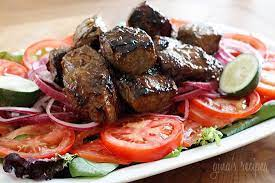

Home
Bo Luc Lac Recipe (Vietnamese shaking beef)

Bo Luc Lac also known as Vietnamese shaking beef is a very flavourful steak dish
Ingredients
Yield: 4 servings, for the marinade
- 2 pounds boneless beef ribeye or sirloin steak cut into cubes
- 10 garlic cloves minced
- 1 tablespoon of soy sauce
- 1 tablespoon of sugar
- 1 tablespoon of oyster sauce
- 1 tablespoon of fish sauce
- 1 tablespoon of sesame oil
For the Salad
- 1 red onion, thinly sliced
- 4 cups watercress leaves or mixed baby greens
- 2 tomatoes, thinly sliced
Preperation
- Marinate steak at least 20 mins before cooking
- Combine garlic, oyster sauce, sugar, fish sauce, soy sauce, and sesame oil with the steak
- Prepare bed of greens and tomatoes on a serving platter
- Heat a large pan or wok on high heat
- Add 1/2 tablespoon of oil and add the beef and let it sear for 2 minutes before shaking it and also adding red onions to the other side for 1-2 mins
- Transfer beef and onions onto watercress and tomatoes